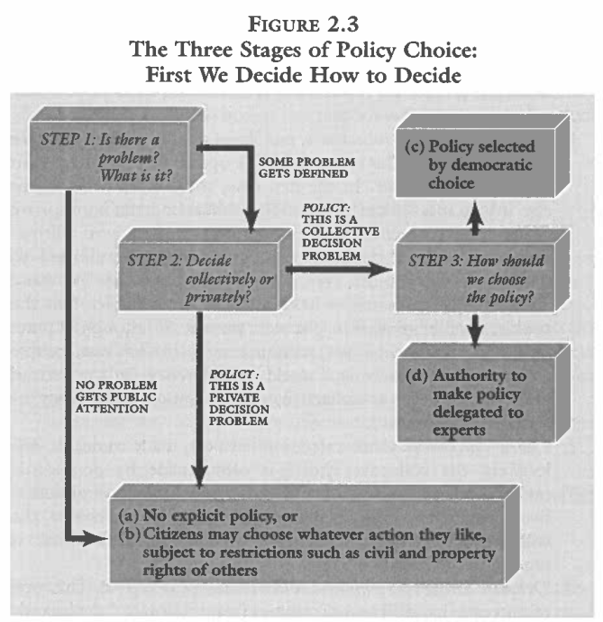
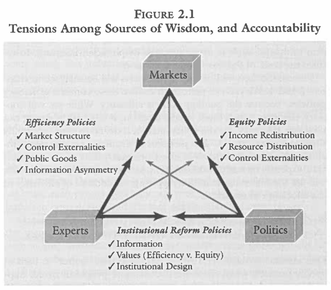

Today’s Agenda
Section 1: Introduction to Environmental Policymaking
Why do societies make policy?
What are the pre-requisites of policy?
Justin Leinaweaver (Spring 2026)
Our Aim for Today
Argument: Problem-solving in a community requires policy
EVERY policy creates winners and losers
The Lessons of the Hun-gats
There was never a “state of nature”
Survival makes policy a necessity
Battles over expertise are unavoidable
Policy effectiveness depends on authority
What is Policy?
“A definite course or method of action selected (as by a government, institution, group or individual) from among alternatives and in the light of given conditions to guide and usually determine present and future decisions…” (Webster’s Third International Dictionary).
What is Policy?
“A definite course or method of action selected (as by a government, institution, group or individual) from among alternatives and in the light of given conditions to guide and usually determine present and future decisions…” (Webster’s Third International Dictionary).
What is Policy?
“A definite course or method of action selected (as by a government, institution, group or individual) from among alternatives and in the light of given conditions to guide and usually determine present and future decisions…” (Webster’s Third International Dictionary).
What is Policy?
“A definite course or method of action selected (as by a government, institution, group or individual) from among alternatives and in the light of given conditions to guide and usually determine present and future decisions…” (Webster’s Third International Dictionary).
What is Policy?
“A definite course or method of action selected (as by a government, institution, group or individual) from among alternatives and in the light of given conditions to guide and usually determine present and future decisions…” (Webster’s Third International Dictionary).
To maximize your chances of success, your policy proposals must be:
Specific,
Adapted to the stakeholders,
Adapted to the science of the problem,
Adapted to the rules of the community, and
Be at least as good as the alternatives.
Problem-solving in a community requires policy, but policymaking has pre-requisites!
Policymaking Pre-Requisites
You must convince the community that:
We have a public problem, and
We require a collective decision to solve it
Policymaking Pre-Requisite 1
Private Problem
- “My choice has no consequence for your welfare”
Public Problem
- “My choices affect your welfare”
Policymaking Pre-Requisite 2
Individual Decision
- “I can choose, alone and without interference”
Collective Decision
- “Choices are made by a group, and are binding on all”
Policymaking Pre-Requisites
You must convince the community that:
We have a public problem, and
We require a collective decision to solve it
Does our magical fishery require public policy?
Group 1: Private Problem, Individual Decision
Group 2: Public Problem, Individual Decision
Group 3: Public Problem, Collective Decision
Setting the Foundation for Policymaking
Moving Group 1 to Group 2
Group 1: The magical fishery is a private problem that should be left to the individual to manage
Group 2: The magical fishery is a public problem, BUT it should still be left to the individual to manage
Setting the Foundation for Policymaking
Moving Group 2 to Group 3
Group 2: The magical fishery is a public problem, BUT it should still be left to the individual to manage
Group 3: The magical fishery is a public problem, AND it should be managed collectively
Policymaking Pre-Requisites
You must convince the community that:
We have a public problem, and
We require a collective decision to solve it
For Next Class
Find an example of a LOCAL community FAILING to solve an environmental problem
Choosing NOT to create a needed policy,
Removing or weakening environmental policies, OR
Persisting with policies that are not working.
OLD SLIDES: The Wisdoms
Munger’s (2000) Three “Wisdoms”
Markets
Politics
Experts

Munger’s (2000) Three “Wisdoms”
Markets
Politics
Experts
Munger’s (2000) Three “Wisdoms”
Markets
Politics
Experts

Munger’s (2000) Three “Wisdoms”
Markets
Politics
Experts